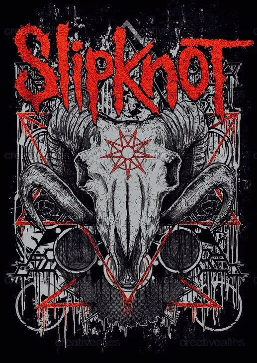

𒌋 Voltar

Rock é um gênero musical popular que surgiu nos Estados Unidos na década de 1950, derivado do rock and roll, que por sua vez evoluiu do blues, country e rhythm and blues. É um estilo musical com instrumentação básica, como guitarra elétrica, bateria, baixo e voz, que se expandiu em diversos subgêneros ao longo do tempo, como hard rock, punk rock, rock progressivo e pop rock. O rock também se tornou um estilo de moda e um estilo de vida.
- Origem e evolução
Origem nos EUA: O rock nasceu nos Estados Unidos na década de 1950 a partir do rock and roll, que misturava ritmos como blues e country.
Primeiros artistas: Artistas como Sister Rosetta Tharpe são citados como precursores do gênero, com sua fusão de gospel e blues com batidas aceleradas nos anos 1920, como descrito em este artigo da Lojas Colombo.
Crescimento: O gênero se expandiu e se transformou, influenciando e sendo influenciado por outros estilos musicais ao longo do tempo.
-
Subgêneros
Rock and roll: A base do gênero, que gerou novos estilos de dança a partir da década de 1950.
Hard rock: Um estilo mais pesado do que o rock convencional, com riffs de guitarra distorcidos e vocais agudos.
Punk rock: Surgiu nas décadas de 1970, com uma abordagem mais crua e agressiva.
Rock progressivo: Surgiu no final dos anos 1960, incorporando elementos de jazz, música clássica e o uso de sintetizadores.
Pop rock: Uma fusão de rock com elementos da música pop, com uma ênfase maior na composição profissional e melodias mais acessíveis, conforme detalhado em este artigo da Wikipedia.
Rock alternativo: Surgiu na década de 1960 com a cena protopunk, influenciado por bandas como The Velvet Underground.